전자계산기기사 (2016-10-01 기출문제)
1과목: 시스템 프로그래밍
1. 프로세스의 정의로 옳은 내용을 모두 고른 것은?
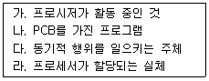
- 가, 나
- 가, 라
- 가, 나, 라
- 가, 나, 다, 라
(정답률: 85%)

2. 주기억장치 관리기법으로 최악 접합(Worst-fit)방법을 이용할 경우 10k 크기의 프로그램은 다음과 같이 분할되어 있는 주기억장치 중 어느 부분에 할당되어야 하는가?
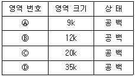
- 영역 번호 Ⓐ
- 영역 번호 Ⓑ
- 영역 번호 Ⓒ
- 영역 번호 Ⓓ
(정답률: 94%)
3. 기계어 명령문(machine instruction)의 오퍼랜드가 명령문 수행에 필요한 정보의 메모리 주소를 나타낸다면, 이러한 번지(addressing) 기법을 무엇이라고 하는가?
- immediate addressing
- direct addressing
- indirect addressing
- indexing addressing
(정답률: 48%)
4. Address Space 2100번지에 어떤 명령이 기억되어 있다. 현재 relocation register의 값이 -1000으로 되어있다면 이 명령은 몇 번지에 relocation 되는가?
- 변동없음
- 2000번지
- 1000번지
- 1100번지
(정답률: 76%)
5. Deadlock의 4가지 필요조건에 해당하지 않은 것은?
- 상호 배제 조건
- 점유와 대기 조건
- 환형 대기 조건
- 선점 조건
(정답률: 88%)
6. 직접 연결 로더에서 각각의 기능과 수행 주체의 연결이 옳지 않은 것은?
- 연결 - 프로그래머
- 재배치 - 로더
- 적재 - 로더
- 기억장소 할당 - 로더
(정답률: 63%)
7. 다중 프로그래밍 시스템에서 어떤 프로세스가 아무리 기다려도 결코 발생하지 않을 사건을 기다리고 있을 때, 그 프로세스는 어떤 상태라고 볼 수 있는가?
- Working Set
- Semaphore
- Deadlock
- Critical Section
(정답률: 93%)
8. 시스템의 성능 평가 기준과 거리가 먼 것은?
- 처리능력
- 구축비용
- 반환시간
- 신뢰도
(정답률: 91%)
9. 운영체제를 자원 관리자(resource manager)의 관점에서 볼 때, 프로세스가 끝나거나 더 이상 기억장치를 필요로 하지 않을 때 이를 회수하기 위한 전략 관리를 담당하는 부분은?
- Memory management
- Processor management
- Device management
- Information management
(정답률: 75%)
10. 어셈블리어에서 라이브러리에 기억된 내용을 프로시저로 정의하여 서브루틴으로 사용하는 것과 같이 사용할 수 있도록 그 내용을 현재의 프로그램 내에 포함시켜 주는 명령은?
- INCLUDE
- EVEN
- ORG
- NOP
(정답률: 90%)
11. 유틸리티 프로그램의 정의로 바른 것은?
- 운영체제 내에 포함되어 있는 시스템 프로그램
- 주로 사용자 프로그램 개발과 시스템 운용에 도움을 주는 프로그램
- 목적 모듈을 연결시켜 하나의 수행 가능한 프로그램을 생성하는 모듈
- 주기억 장치와 입출력 장치 사이에 동작하는 프로그램
(정답률: 79%)
12. 어셈블리어로 프로그램을 작성할 때, 고급언어와 비교하여 가장 큰 장점으로 볼 수 있는 것은?
- 명령어들이 간략하기 때문에 프로그램이 간단하게 된다.
- 명령어의 종류가 많으므로 초보자가 이용하기에 적합하다.
- 기능이 단순하므로 프로그램 개발이 용이하다.
- 하드웨어를 직접 활용할 수 있어 처리속도가 빠르다.
(정답률: 81%)
13. 인터럽트의 종류 중 시스템 타이머에서 일정한 시간이 만료된 경우나 오퍼레이터가 콘솔상의 인터럽트 키를 입력한 경우 발생하는 것은?
- SVC 인터럽트
- 외부 인터럽트
- 입/출력 인터럽트
- 재시작 인터럽트
(정답률: 82%)
14. 매크로가 3개의 기계어 명령어로 정의되어 있을 때, 주프로그램에서 매크로 호출을 3번할 경우 확장된 명령어 수는?
- 0
- 3
- 6
- 9
(정답률: 85%)
15. 프로세스보다 더 작은 CPU의 실행단위를 말하며, 다중 프로그래밍을 지원하는 시스템하에서 CPU에게 보내져 실행되는 단위를 의미하는 것은?
- 페이지
- 세그먼트
- 태스크
- 스레드
(정답률: 73%)
16. 별도의 로더 없이 언어 번역 프로그램이 로더의 기능까지 수행하는 것은?
- Absolute Loader
- Direct Linking Loader
- Compile And Go Loader
- Dynamic Loading Loader
(정답률: 82%)
17. 어셈블리어에 대한 설명으로 옳지 않은 것은?
- 어셈블러에 의하여 기계어로 번역됨
- 어셈블리어는 기종에 따라 내용의 차이가 없음
- 기호로 표시되어 프로그램을 작성하기가 기계어보다 유리함
- 고급 언어로 작성된 프로그램보다 처리시간이 일반적으로 빠름
(정답률: 79%)
18. 어셈블리어 명령어 중 어떤 기호적 이름에 상수 값을 할당하는 것은?
- ORG
- EQU
- INCLUDE
- END
(정답률: 87%)
19. 시스템 프로그램에 속하지 않는 것은?
- O.S
- Compilers
- Scheduler
- DMBS
(정답률: 72%)
20. 다음 ( ) 안의 내용으로 옳게 짝지어진 것은?
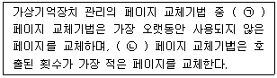
- ㉠ LFU, ㉡ FIFO
- ㉠ LRU, ㉡ LFU
- ㉠ FIFO, ㉡ LRU
- ㉠ LRU, ㉡ FIFO
(정답률: 87%)
2과목: 전자계산기구조
21. 병렬처리 가운데 처리 단계를 stage라고 하는 몇개의 단계로 나누고 각 stage 사이에는 latch라는 버퍼를 두고 프로그램 수행에 필요한 작업을 시간적으로 중첩하여 수행하는 처리기를 무엇이라 하는가?
- 파이프라인 처리기
- 배열 처리기
- 다중 처리기
- VLSI 처리기
(정답률: 47%)
22. CPU가 인스트럭션을 수행하는 순서로 옳은 것은?
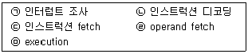
- ㉢→㉠→㉡→㉣→㉤
- ㉣→㉢→㉡→㉤→㉠
- ㉡→㉢→㉣→㉤→㉠
- ㉢→㉡→㉣→㉤→㉠
(정답률: 70%)
23. 인터럽트에 대한 설명으로 옳지 않은 것은?
- 인터럽트란 컴퓨터가 정상적인 작업을 수행하는 도중에 발생하는 예기치 않은 일들에 대한 서비스를 수행하는 기능이다.
- 온라인 실시간 처리를 위해 인터럽트 기능은 필수적이다.
- 입ㆍ출력 인터럽트를 이용하면 중앙처리장치와 주변장치 간의 극심한 속도 차이 문제를 해결하여 컴퓨터의 효율을 증대시킬 수 있다.
- 인터럽트는 모두 에러(error)에 대한 복구기능만을 가지고 있다.
(정답률: 85%)
24. 병렬 처리기의 종류에 대한 설명으로 틀린 것은?
- 시간적 병렬성을 위해 중첩 처리를 행하는 파이프라인 처리기(Pipeline Processor)
- 공간적 병렬성을 위해 다수의 동기된 처리기를 사용하는 배열 처리기(Array Processor)
- 기억 장치나 데이터베이스 등의 자원은 공유하며 상호 작용하는 처리기들을 통하여 비동기적 병렬성을 얻는 다중 처리기(Multi Processor)
- 양방향 처리를 비동기적으로 수행하는 벡터처리기(Vector Processor)
(정답률: 70%)
25. 8비트 구조에 해당하는 인텔 컴퓨터 프로세서는?
- Intel Core i5
- Intel 8⑤1
- Intel Pentium
- Intel Celeron
(정답률: 80%)
26. 마이크로 오퍼레이션은 어디에 기준을 두고 실행되는가?
- flag
- 클록 펄스
- 메모리
- RAM
(정답률: 80%)
27. 레지스터에 대한 설명으로 틀린 것은?
- 레지스터는 워드를 구성하는 비트 개수만큼의 플립플롭으로 구성된다.
- 여러 개의 플립플롭은 공통 클록의 입력에 의해 동시에 여러 비트의 입력 자료가 저장된다.
- 레지스터에 사용되는 플립플롭은 외부입력을 그대로 저장하는 T 플립플롭이 적당한다.
- 레지스터를 구성하는 플립플롭은 저장하는 값을 임의로 설정하기 위해 별도의 입력단자를 추가할 수 있으며, 저장값을 0으로 하는 것을 설정해제(CLR)라 한다.
(정답률: 68%)
28. 2진 정보 1001를 그레이 코드로 바꾸면?
- 0110
- 1110
- 1100
- 1101
(정답률: 78%)
29. 컴퓨터 주기억장치의 용량이 256MB라면 주소버스는 최소한 몇 Bit 이상이어야 한다.
- 20Bit 이상
- 24Bit 이상
- 26Bit 이상
- 28Bit 이상
(정답률: 59%)
30. zero-address 명령 형식에 속하는 것은?
- 연산의 결과는 누산기에 남는다.
- 하나의 명령어 수행을 위하여 최소한 4번 기억장치에 접근하여야 하므로 수행 시간이 길다.
- 누산기에 기억된 자료를 사용하여 연산을 수행한다.
- 모든 연산은 stack을 이용하여 수행하고, 그 결과도 stack에 보존한다.
(정답률: 79%)
31. 음수를 2의 보수로 표현할 때, 16비트로 나타낼 수 있는 정수의 범위는?
- -215 ~ +215
- -216 ~ +216
- -215-1 ~ +215
- -215 ~ +215-1
(정답률: 80%)
32. 그림의 진리표에서 출력을 최소화하면?
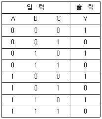
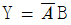
- Y = AB
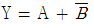
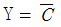
(정답률: 73%)
33. 컴퓨터의 주 메모리로 사용하며, 휘발성이 있어 전원이 차단될 경우 기억 내용이 지워지는 특성이 있는 메모리는?
- ROM
- RAM
- Register
- Flash Memory
(정답률: 89%)
34. 다음 회로의 기능으로 옳은 것은?
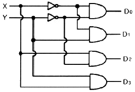
- decoder
- multiplexer
- encoder
- shifter
(정답률: 78%)
35. Flynn의 컴퓨터 구조 제안 모델이 아닌 것은?
- SISD
- MIMD
- SIMD
- CIMD
(정답률: 89%)
36. 집적회로(IC)의 기본적인 특성을 나타내는 요소로 가장 거리가 먼 것은?
- 전달 지연 시간(propagation delay time)
- 전력 소모(power dissipation)
- 팬 아웃(pan out)
- 전송 속도(transfer speed)
(정답률: 54%)
37. 가상 메모리(Virtual Memory)에 대한 설명으로 옳은 것은?
- 가상 메모리 체제는 컴퓨터의 속도를 개선하기 위한 방법이다.
- 가상 메모리의 보조기억장치는 SASD방식이 적합하다.
- 가상 메모리는 데이터를 미리 주기억장치에 저장한 것을 말한다.
- 가상 메모리는 메모리의 가용 공간 확대롤 도모한다.
(정답률: 71%)
38. 내부 인터럽트의 원인이 아닌 것은?
- 정전
- 불법적인 명령의 실행
- overflow 또는 0(zero)으로 나누는 경우
- 보호 영역내의 메모리 주소를 access 하는 경우
(정답률: 76%)
39. 컴퓨터의 주기억장치 용량이 8192비트이고, 워드길이가 16비트일 때 PC(program counter), AR(Address register)와 DR(data register)의 크기로 가장 적합한 것은?
- PC=8, AR=9, DR=16
- PC=9, AR=9, DR=16
- PC=16, AR=16, DR=16
- PC=8, AR=16, DR=16
(정답률: 70%)
40. 10진 데이터의 입ㆍ출력 시 사용하는 데이터형식은?
- 16진수 형태
- 2진수 형태
- pack 형태
- unpack 형태
(정답률: 67%)
3과목: 마이크로전자계산기
41. 마이크로프로세서의 처리 능력(performance)과 가장 관계가 적은 것은?
- clock frequency
- data bus width
- addressing mode
- software compatibility
(정답률: 69%)
42. 매크로(macro)의 설명과 가장 관계없는 것은?
- 매크로는 일종의 폐쇄적 서브루틴(closed subroutine)이다.
- 매크로 호출은 매크로 이름을 통해서만 가능하다.
- 매크로는 인수 전달이 가능하다.
- 매크로 확장(macro expansion)은 언어번역 전에 행해진다.
(정답률: 57%)
43. CPU 내부에 있는 것으로 이 값이 '1'이면 CPU는 인터럽트 동작(enable) 상태가 되는 것은?
- PC
- IFF
- NMI
- STAT
(정답률: 61%)
44. 서브루틴 호출이나 인터럽트 서비스와 같은 동작 후에 되돌아갈 주소를 저장하는 역할을 하는 것은?
- 상태 레지스터(Status register)
- 프로그램 계수기(Program counter)
- 메모리 주소 레지스터(Memory address register)
- 스택(Stack)
(정답률: 69%)
45. 명령어에 대한 설명으로 틀린 것은?
- 컴퓨터가 어떻게 동작해야 하는지를 나타내는 것이다.
- 연산장치에서 해독되어 그 동작이 이루어진다.
- 컴퓨터가 동작해야 할 명령을 차례대로 모아놓은 것을 프로그램이라 한다.
- 명령어의 형식은 OP Code와 Operand로 구성된다.
(정답률: 68%)
46. 주기억 장치와 입ㆍ출력 장치 사이의 전송 속도차를 극복하기 위해 데이터를 임시저장하는 장소는?
- 보조기억 장치
- 레지스터
- 인터페이스
- 버퍼
(정답률: 71%)
47. 캐리 플래그가 리셋 되었을 때 어떤 무부호 2진수를 곱셈 명령을 사용하지 않고 2로 곱하는 효과를 갖고 있는 명령어는?
- shift right
- shift left
- exclusive OR
- rotate right
(정답률: 75%)
48. 동기 또는 비동기식으로 마이크로프로세서 간의 원거리 통신을 하려고 한다. 이 때 필요하지 않은 장치는?
- MODEM
- RS232 Driver/receiver
- SIO
- PIO
(정답률: 64%)
49. 다음 장치 중 8개의 입력키를 3비트 키-코드로 변환하는 장치는?
- decoder
- multiplexer
- encoder
- counter
(정답률: 61%)
50. DRAM의 설명 중 가장 옳지 않은 것은?
- 내부에 커패시터(capacitor)를 사용한다.
- 재생(refresh) 시키기 위한 회로가 필요하다.
- 집적도가 높아 저장 용량이 크다.
- 비트 단위당 가격이 SRAM에 비해 높다.
(정답률: 74%)
51. 다음의 정보통신용 버스 중 병렬전송이 아닌것은?
- VME bus
- RS-232C
- Multi bus
- IEEE-488 bus
(정답률: 80%)
52. 비동기(asynchronous) 직렬 전송과 관련이 가장 적은 것은?
- stop bit, start bit
- framing error
- sync character
- information bit
(정답률: 76%)
53. 인스트럭션과 자료의 재배치가 가능한 주소지정방식은 무엇인가?
- 간접 주소 방식
- 직접 주소 방식
- 인덱스 주소 방식
- 상대 주소 방식
(정답률: 47%)
54. 어떤 마이크로컴퓨터 시스템의 데이터 버스(data bus)가 16비트, 어드레스 버스(address bus)가 24비트로 구성되었을 때, 이 컴퓨터 시스템 주기억 장치의 최대 용량은? (단, KB=Kilo Byte, MB=Mega Byte이다.)
- 64 KB
- 256 KB
- 1 MB
- 16 MB
(정답률: 58%)
55. 마이크로컴퓨터 운영체제의 기능과 거리가 먼 것은?
- 파일 보호
- 파일 디렉토리 관리
- 상주 모니터로의 모드 전환
- 사용자 프로그램의 번역 및 실행
(정답률: 58%)
56. 다음 중 Cycle steal과 관련 있는 것은?
- DMA
- Data buffer
- Internal bus
- Interrupt
(정답률: 63%)
57. 다음 중 디버거인 ICE(In-Circuit Emulator)의 특징에 속하지 않은 것은?
- 롬 프로그램만 다운로딩 할 수 있는 기능
- 임의의 어드레스로 실행을 정지시키는 브레인크 포인트 기능
- 실행시간을 실시간으로 확인 가능한 리얼타임 트레이스 기능
- 레지스터로의 데이터 설정 기능
(정답률: 68%)
58. 16k 바이트의 기억용량을 갖는 8비트 마이크로컴퓨터에서 필요한 최소 어드레스 라인수는?
- 8
- 14
- 16
- 32
(정답률: 52%)
59. 다음 중 보조기억장치가 아닌 것은?
- Floopy Disk
- Hard Disk
- RDRAM
- Solid State Drive
(정답률: 78%)
60. 다음 캐시 기억 장치에 대한 설명으로 가장 옳지 않은 것은?
- 캐시 기억 장치는 주기억 장치의 유효 액세스 시간을 줄이기 위해 사용된다.
- 캐시 기억 장치의 관리는 주로 하드웨어에 의하여 구현된다.
- 캐시 기억 장치를 사용하면 사용자에게 실제의 기억 공간보다 더 넓은 주소 공간(address space)을 제공할 수 있다.
- 캐시 기억 장치의 구현을 위하여 CAM(content addressable memory)을 많이 사용한다.
(정답률: 63%)
4과목: 논리회로
61. 다음 회로와 같은 기능을 하는 게이트(gate)는?
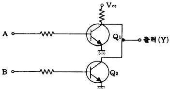
- NAND 게이트
- NOR 게이트
- EX-OR 게이트
- OR 게이트
(정답률: 67%)
62. 다음 회로의 명칭은?
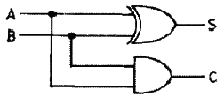
- 반감산기
- 반가산기
- 전감산기
- 전가산기
(정답률: 74%)
63. f(X, Y, Z) =
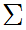
(0, 2, 3, 4, 7)인 논리식이 있다. 이것을 f(X, Y, Z) =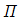
( )의 형식으로 표현하면?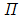
(1, 3, 6) (1, 5, 6)
(1, 5, 6) (1, 6)
(1, 6) (5, 6)
(5, 6)
(정답률: 73%)
64. 다음의 카르노 맵을 이용해 간략화한 논리식은?
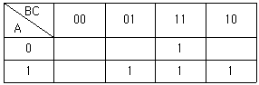
- F = AB + BC + CA
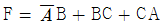
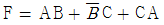
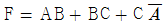
(정답률: 68%)
65. 16bit의 MSB 가중치(weight)는?
- 65535
- 65536
- 32767
- 32768
(정답률: 49%)
66. 회로의 논리함수가 다수결 함수(Majority Function)를 포함하고 있는 것은?
- 전가산기
- 전감산기
- 3-to-8 디코더
- 우수 패리티 발생기
(정답률: 71%)
67. 컴퓨터 시스템에서 기억요소(memory elements)로 사용될 수 없는 것은?
- Converter
- EEPROM
- Register
- SRAM
(정답률: 79%)
68. 다음 중 불대수 논리연산에서 교환 법칙에 해당하는 것은?
- A · (B · C) = (A · B) · C
- A · B = B · A
- A · (A + B) = A
- A · (B + C) = A · B + A · C
(정답률: 74%)
69. 입력 펄스의 수를 세는 회로는?
- 카운터
- 레지스터
- 디코더
- 인코더
(정답률: 78%)
70. 사용자가 직접 프로그램 할 수 없는 ROM은?
- Mask ROM
- PROM
- EPROM
- EEPROM
(정답률: 66%)
71. 레이스(Race) 현상을 방지하기 위하여 사용하는 것은?
- 무안정 M/V
- M/S Flip-Flop
- Schmitt Trigger
- JK Flip-Flop
(정답률: 56%)
72. 다음과 같은 동작특성을 가진 게이트는?
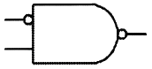
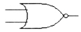
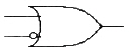
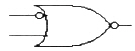
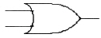
(정답률: 80%)
73. 다음 중 데이터(data) 분배 회로로 사용되는 것은?
- 멀티플렉서
- 디멀티플렉서
- 인코더
- 디코더
(정답률: 69%)
74. 에러(error)를 검출하여 정정할 수 있는 부호는?
- 해밍 코드
- excess-3 코드
- 8421 코드
- 2421 코드
(정답률: 82%)
75. 다음 논리함수식 X가 유도되었을 때 이 논리식을 간략화 하면?
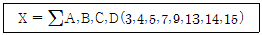
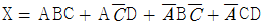
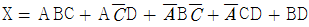
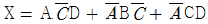
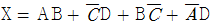
(정답률: 38%)
76. 플립플롭에서 현재 상태와 다음 상태를 알 때 플립플롭에 어떤 입력을 넣어야 하는지를 나타내는 표는 무엇인가?
- 진리표
- 여기표
- 순차표
- 상태표
(정답률: 68%)
77. 두 입력 A와 B를 비교하여 B＞A 및 A=B이면 출력(Y)이 '1', 그리고 A＞B이면 출력(Y)이 '0'이 되는 논리회로를 설계할 때 조건을 만족하는 논리회로는?
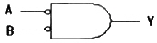
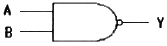
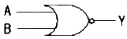
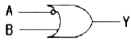
(정답률: 75%)
78. 3×8 디코더를 이용하여 다음의 논리함수 f를 구현하려고 한다. 이때 추가로 필요한 게이트는? (단, 주어진 디코더의 출력은 active-low이다.)
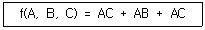
- 5 input NOR
- 3 input NOR
- 5 input NAND
- 3 input NAND
(정답률: 56%)
79. CMOS 회로의 특징이 아닌 것은?
- 정전기에 약하여 취급에 주의하여야 한다.
- 동작 주파수가 증가하면 팬 아웃도 증가한다.
- TTL에 비하여 전력소모가 적다.
- DC 잡음 여유는 보통 전원 전압의 40% 정도이다.
(정답률: 68%)
80. A 값이 0011, B 값이 0101일 때 그림에서 출력 Y 값은?
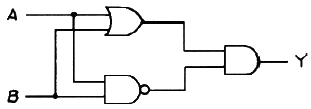
- 1001
- 1100
- 0011
- 0110
(정답률: 79%)
5과목: 데이터통신
81. 음성신호 4kHz를 PCM 다중화하기 위한 Nyquist 표본화 주기[μs]는?
- 8000
- 125
- 225
- 8
(정답률: 73%)
82. 전송하려는 부호어들의 최소 해밍거리가 6일 때 수신시 정정할 수 있는 최대 오류의 수는?
- 1
- 2
- 3
- 6
(정답률: 57%)
83. 원천 부호화(source coding) 방식에 속하지 않는 것은?
- DPCM
- DM
- LPC
- FDM
(정답률: 72%)
84. 128.107.176.0/22 네트워크에서 호스트에 의해 사용될 수 있는 서브넷 마스크는?
- 255.0.0.0
- 255.248.0.0
- 255.255.252.0
- 255.255.255.255
(정답률: 73%)
85. 8비트 코드(데이터)에 1개의 시작 비트와 2개의 정지 비트를 추가하여 전송하면 전송 효율은 약몇 % 인가?
- 62.5
- 65.7
- 72.7
- 82.5
(정답률: 72%)
86. HDLC의 프레임 중 링크의 설정과 해제, 오류회복을 위해 주로 사용되는 것은?
- Information Frame
- Supervisory Frame
- Response Frame
- Unnumbered Frame
(정답률: 78%)
87. 다음 중 TCP 헤더에 포함되는 정보가 아닌것은?
- 긴급 포인터
- 호스트 주소
- 순서 번호
- 체크섬
(정답률: 59%)
88. 채널 대역폭이 150 kHz이고 S/N이 15일 때 채널용량(kbps)은?
- 150
- 300
- 450
- 600
(정답률: 77%)
89. 전송제어 절차를 옳게 나타낸 것은?
- 회선 접속 → 데이터 링크 확립 → 회선 절단 → 데이터 링크 해제 → 정보 전송
- 데이터 링크 확립 → 회선 접속 → 정보 전송 →회선 절단 → 데이터 링크 해제
- 데이터 링크 확립 → 정보 전송 → 회선 접속확립 → 데이터 링크 해제 → 회전 절단
- 회선 접속 → 데이터 링크 확립 → 정보 전송 → 데이터 링크 해제 → 회선 절단
(정답률: 93%)
90. 다음 중 link-state 방식의 라우팅 프로토콜로 옳은 것은?
- RIPv2
- OSPF
- RIP
- EIGRP
(정답률: 75%)
91. 점대점 링크를 통하여 인터넷 접속에 사용되는 프로토콜인 PPP(Point to Point Protocol)에 대한 설명으로 옳지 않은 것은?
- 재전송을 통한 오류 복구와 흐름제어 기능을 제공한다.
- LCP와 NCP를 통하여 유용한 기능을 제공한다.
- IP 패킷의 캡슐화를 제공한다.
- 동기식과 비동기식 회선 모두를 지원한다.
(정답률: 47%)
92. PSK에서 반송파간의 위상차는? (단, M은 진수이다.)
- π/M
- π×M
- 2π/M
- 5π/2M
(정답률: 88%)
93. QPSK에 대한 설명으로 틀린 것은?
- 두 개의 DPSK를 합성한 것이다.
- 피변조파의 크기는 일정하다.
- 반송파 간의 위상차는 90°이다.
- I채널과 Q채널 두 개가 있다.
(정답률: 54%)
94. 토큰링 방식에 사용되는 네트워크 표준안은?
- IEEE 802.2
- IEEE 802.3
- IEEE 802.5
- IEEE 802.6
(정답률: 79%)
95. 라우팅 프로토콜 중 EGP(Exterior Gateway Protocol)로 사용되며 AS-Path를 통해 L3 Looping이 발생하는 것을 방지하고, 다양한 Attribute값을 통해 best path를 결정하는데 있어 관리자의 의도를 반영할 수 있는 라우팅 프로토콜은?
- RIP
- OSPF
- EIGRP
- BGP
(정답률: 65%)
96. 다음 중 '1'은 한 펄스폭을 2개로 나누어서 반구간은 양(+), 펄스의 나머지 구간은 음(-)으로 구성하고 '0'은 '1'과 반대로 구성하는 데이터 전송방법은?
- 바이폴라 펄스
- 맨체스터 펄스
- 차동 펄스
- 단극 RZ 펄스
(정답률: 82%)
97. 패킷(packet) 교환과 관계가 없는 것은?
- 패킷 단위로 데이터 전송
- 고정적인 전송 대역폭
- 가상회선 방식
- 데이터그램 방식
(정답률: 66%)
98. 패킷교환망의 경로 배정 중 각 노드에 들어오는 패킷을 도착된 링크를 제외한 다른 모든 링크로 복사하여 전송하는 방식은?
- Flooding
- Random Routing
- Fixed Routing
- Adaptive Routing
(정답률: 86%)
99. HDLC 프레임 구성에서 플래그는 전송 프레임의 시작과 끝을 나타낸다. 이 플래그의 고유 비트패턴은?
- 01111110
- 11111111
- 00000000
- 10000001
(정답률: 75%)
100. 한 개의 프레임을 전송하고, 수신 측으로부터 ACK 및 NAK 신호를 수신할 때까지 정보전송을 중지하고 기다리는 ARQ(Automatic Repeat reQuest) 방식은?
- CRC 방식
- Go-back-N 방식
- Stop-and-wait 방식
- Selective repeat 방식
(정답률: 86%)
- 이 내용은 맞는 정의이다.
나. 프로세스는 각각 독립된 메모리 영역을 가지며, 다른 프로세스의 메모리에 직접 접근할 수 없다.
- 이 내용도 맞는 정의이다.
다. 프로세스는 하나의 스레드만 가질 수 있다.
- 이 내용은 틀린 정의이다. 프로세스는 여러 개의 스레드를 가질 수 있다.
라. 프로세스는 운영체제로부터 시스템 자원을 할당받는다.
- 이 내용도 맞는 정의이다.
따라서, 옳은 내용을 모두 포함한 정답은 "가, 나, 라"이다.